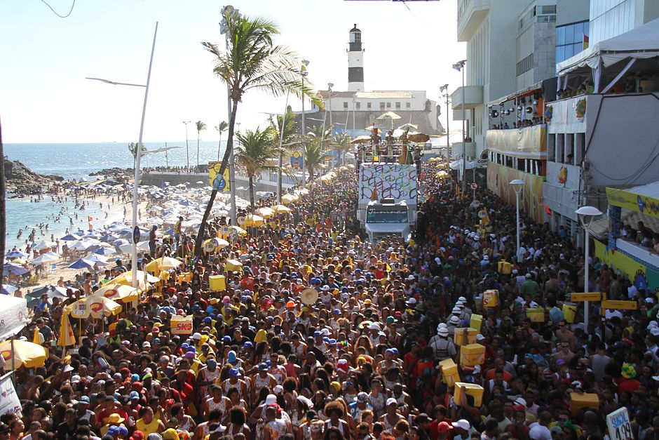
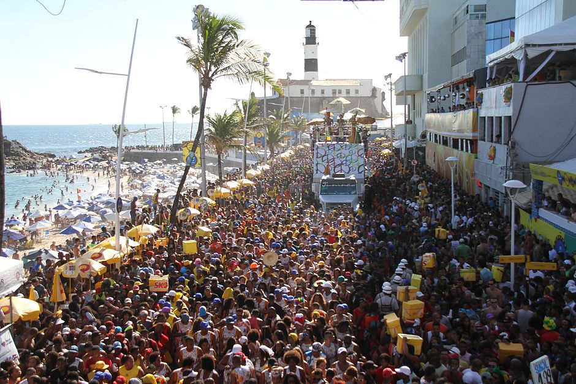

In 1950, in the city of Salvador, the electric trio emerged after Dodô and Osmar used an old truck to place musical instruments they played and amplified by a loudspeaker in its back, parading through the streets of the city. They were a huge success. However, the name “electric trio” was only used a year later, when Temistócles Aragão was invited by the two.
The electric trio underwent a transformation in 1979, when Morais Moreira added the afoxés batuque to the composition. New success was given to electric trios, which began to be adopted in various parts of Brazil.
 
